CS445 Final Project Report (Project6 + CS497)
2.5D Live Holographic Teleconference
(Real-time projection with occlusion)
Team: Ching-Hua Yu (cyu17), Hung Woei Neoh (hneoh2), Vasista Vovveti (vovveti2)
Abstract:
Our core plan is to cut a person from a video and paste the person into another video with occlusion treatment. Both videos are obtained from real time video streams. The pasting comes with additional processing to scale the person’s size relative to the scene.
Demo: https://drive.google.com/file/d/1n4Dv4Xl115nDUSUJaDqGNQ_tj1tIgWSE/view?usp=sharing
- Introduction
- The tools used in this are a webcam and a Kinect
- Design framework - The challenges of the project involves three parts
- Segmentation based approaches (Ching-Hua)
- Background subtraction (Vasista and Hung Woei)
- Background depth map masking
- Using Kinect (Vasista)
- Using traditional cameras where we proposed an improved approach (Ching-Hua)
- Projection scaling and positioning (Hung Woei)
- Foreground extraction to obtain the foreground character
- The task is to extract interesting foreground objects that we can hologram into another scene.
- There are two methods we compare for this task: 1) Background subtraction with a static background (store as an initial frame to subtract) 2) Segmentation based approach to extract objects
- Segmentation based approach:
- 8.74 sec on Intel Core-i7 CPU
- 0.99 sec on Nvidia GTX-1050 2GB
- 0.00017 sec on Google colab with 1 GPU
- In midterm report, we have an initial test https://drive.google.com/file/d/1DnA0fasf8guKHHNjEhjgvdgX88cigbvH/view?usp=sharing (by manually made function). Here we use StereoBM_create from opencv instead. Note that the quality is improved since the openCV function uses some more involved steps.
- We implemented background subtraction to extract the foreground character from a scene to be pasted into a different background
- This is done using the background subtraction library functions in OpenCV
- The background subtraction algorithm used is the Gaussian mixture-based MOG algorithm from this paper
- The extracted foreground mask suffers from random white spots within the mask. To remedy this, we dilate the mask multiple times to cover up the white spots, and erode it to revert it back to its original shape
- Issues: If one black pixel remains inside the mask after dilation, the erosion will magnify those pixels, resulting in diamond shaped black holes within the mask
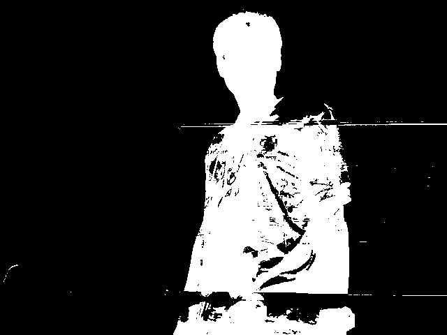 The foreground mask obtained from Background Subtraction | 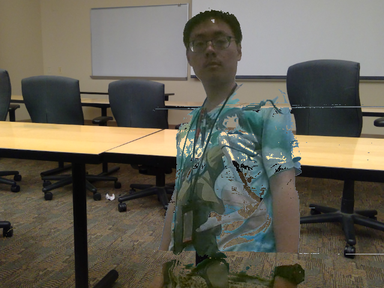 The foreground object extracted and pasted onto a different background |
- Comparisons of the two methods
| Traditional BGS | Segmentation-based |
Advantage | - Fast
- Easy to implement with OpenCV library
| - Identifies individual objects
- Works for dynamic background (since objects are separated)
- Solid foreground masks
- Real-time with today’s GPU
|
Disadvantage | - Mask is not solid, requires post processing
- Works on static background only
- Cannot separate multiple objects in foreground
| - Consume more computation power
|
- Obtaining a depth map from a background scene using Kinect
- The kinect provides relatively stable colorful frames and depth frames.
- The colorful frames and the depth frames are from two cameras and have a short distance. Hence we have to warp the frames and align them first (using some techniques from Project 5).
- Example of depth map from Kinect:
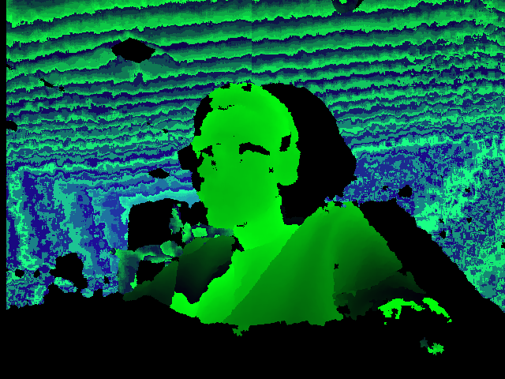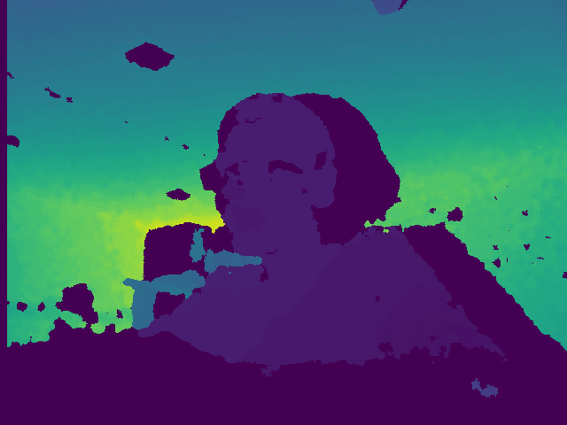
- In this depth image, black denotes unknown depth. When unknown depth is detected, that location is filled with the last known value.
- This greatly reduces recurring noise in the image.
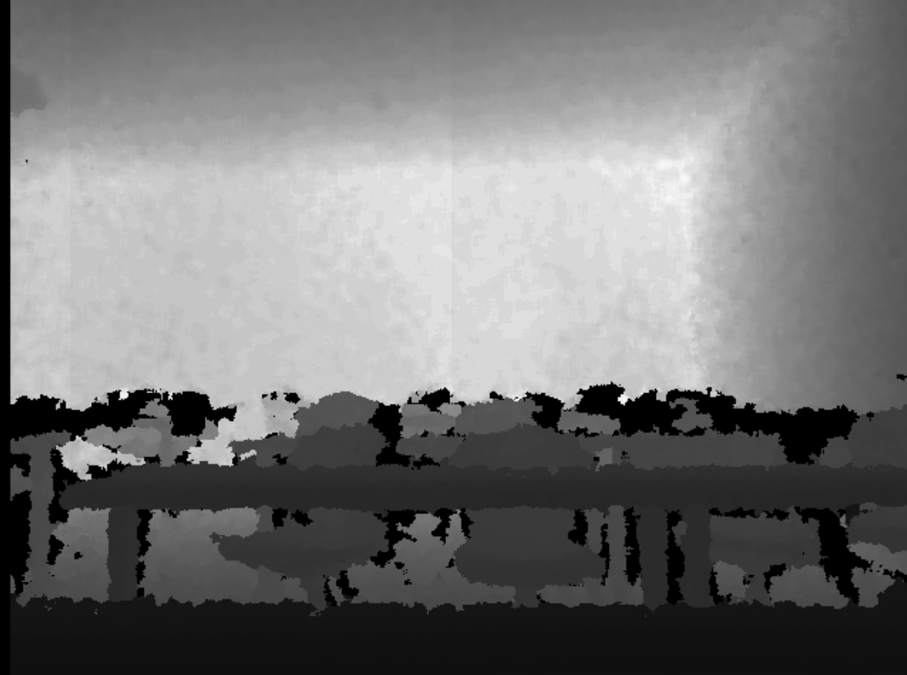
- The approach would need two (left/right) cameras of the same kind; otherwise, there will be some more alignment jobs to be done.
- With one camera, we can still work around by shifting the camera a bit, but then it can only serve for a static background creation (with a depth map).
- The main problem of the traditional camera is that there are too many noise, so no matter how numDisparities and blockSize tuned, it’s not possible to get a clean mask (compared to the ones from Kinect)
- We solve this problem by using a (real-time) segmentation. The segmentation function provides masks of foreground objects without depth information. Then we use the depth map to decide the depth of the objects.
- As it relies the performance of segmentation, scenes like classrooms (with clear objects that have been well trained to detect) are easier.
- Example:
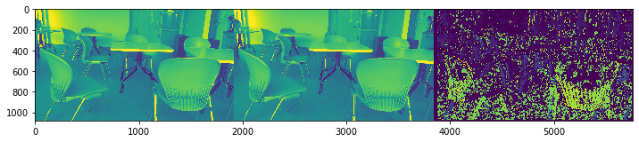
- As we can see above, the depth map is hard to clean
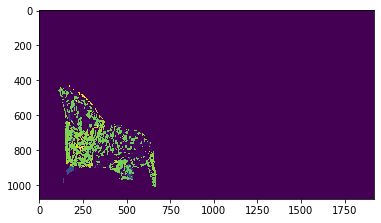
- We estimate the “dense” of each object mask one by one
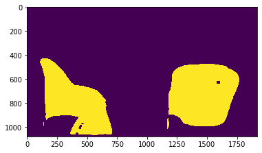
- With the threshold condition, we can get object mask of a certain depth even cleaner than those from Kinect.
- Comparison of two methods
Depth-map masking | Kinect | Traditional Cameras + Segmentation improvement |
Advantage | - Fast, easy to be real-time
- Providing color frames and depth frames measured from distinct cameras stably
| - No special device required
- Good quality
|
Disadvantage | - Need Kinect (ver 2.0 has a better quality than ver 1.0)
| - Consume more computational power (but real-time with GPU)
|
IV. Projection scaling and positioning
- Adjusting the foreground character’s size and position in the composite video through interactive user interface
- We created an interactive interface in Jupyter notebook which allows the user to identify the vanishing line of the image, the positions of reference objects and objects to be pasted, as well as their heights.
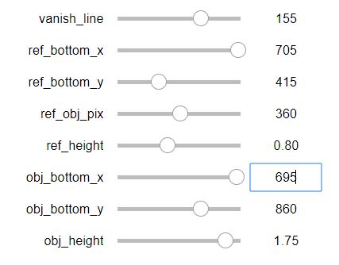
Jupyter notebook comes with convenient UI interfaces that takes user inputs and applies these inputs to a function every time the parameters change
- Then, using the computation methods from lecture, we calculated how many pixels the object to be pasted would occupy
- We then resize the object and its mask, and performed the necessary translation to add the object at the desired location with the desired height
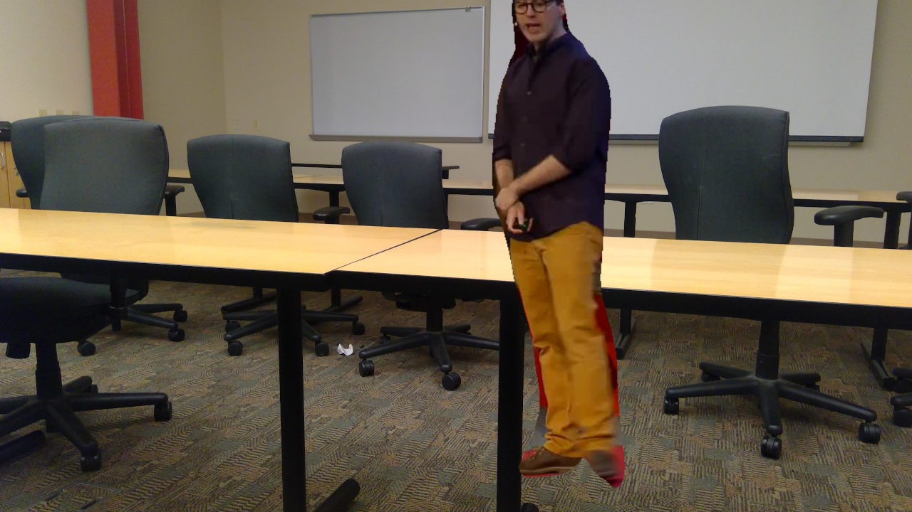
The person from the TEDTalk sample video, resized and repositioned accordingly
- The reason this didn’t make the cut is because this does not give us the depth mapping needed for occlusion. Thus, this code was shelved, and we simply allow users to resize the character manually
V. Results:
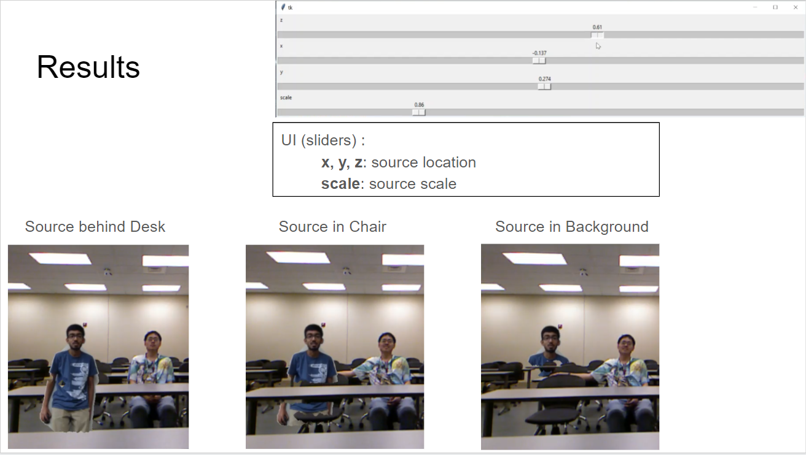
We created a GUI that allows users to select the size and location of the source object in the destination frame. x and y denote horizontal and vertical translation, respectively. z denotes depth translation (into the page => out of the page). As you can see in these images, the depth location can be dynamically changed in real-time by the user.
Demo: https://drive.google.com/file/d/1n4Dv4Xl115nDUSUJaDqGNQ_tj1tIgWSE/view?usp=sharing
Techniques and ideas that we attempted, but more refinement are needed
- Automated detection of vanishing lines
- To automatically detect vanishing lines, the idea was to extract projection lines on a given image/scene and compute the intersection points between those lines. Then, by looking for dense clusters of intersection points, we can approximate vanishing points and obtain the vanishing line of a scene.
- We tried to obtain lines in a given scene through edge detection algorithms. By using Canny Edge Detection and Hough transform, we were able to extract the lines of a particular scene, as displayed below
Original scene | 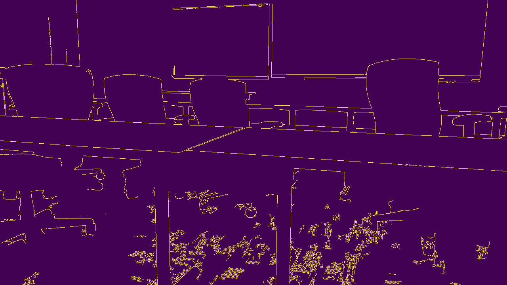 The edges detected by the Canny Edge algorithm, using parameters 60 and 300 |
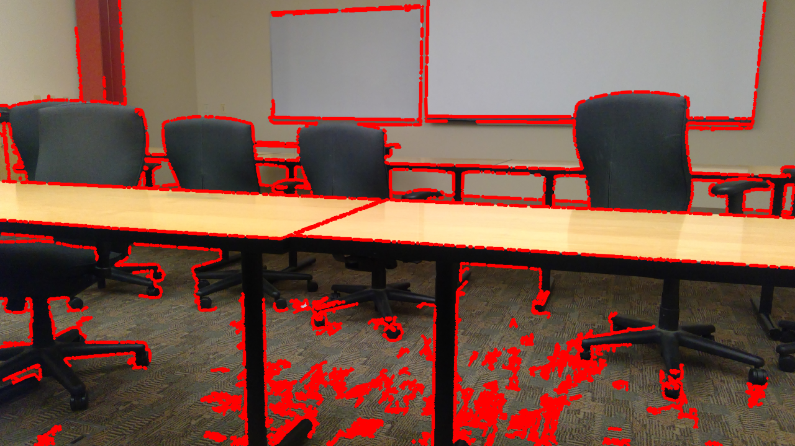 The lines detected by Hough transform, drawn onto the image | 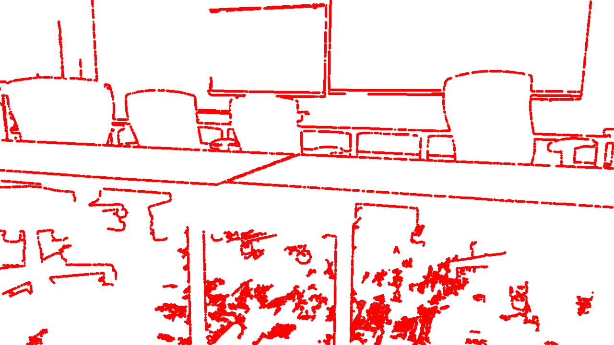 The extracted lines, drawn onto a blank canvas |
- However, the lines obtained from the Hough transform consisted of many individual short segments, as observed from plotting the obtained lines using matplotlib. Many of these lines are almost parallel to each other, and therefore can intersect anywhere ranging from within the image, to tens or hundreds of thousands of pixels outside the image region. This resulted in a lot of noise and inaccuracy in determining clusters of intersection points
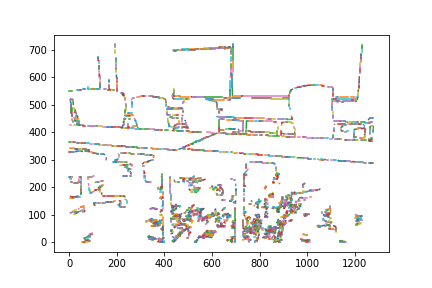 The numerous amount of colors indicates a lot of separate line segments | 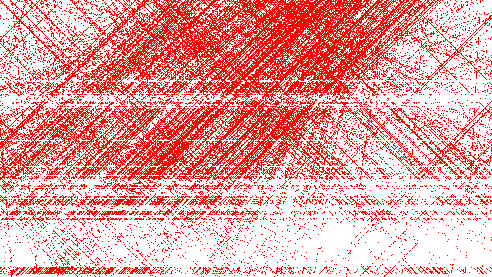 A plot of all the intersection points of the line segments that are within the image region. As observed, there are intersection points throughout the entire image |
- The Canny Edge detection and Hough transform also had parameters that need to be adjusted for different scenes. There is no single set of values that fit all possible scenes, which makes it hard to automate
- Detection of forward/backward movement of foreground characters
- We wanted to be able to detect movements of foreground characters, and display those movements accurately in the given image
- However, that would mean that we would need to compute a depth map of the moving person, or estimate the forward/backward movements through the growth/shrinking of the person from frame to frame. Then, we would need to shift the position where we paste the person accordingly in the background image. This is a non-trivial amount of work, and we do not have any clear ideas on how to go about this
V. Possible extensions
- In order to achieve 2.5D (i.e., with occlusion), we need the background with depth information.
- The depth map generated by either Kinect or two traditional cameras doesn’t have individual objects separated. We are developing an approach to combining traditional depth map with segmentation for higher accuracy.
- Extracting foreground using both traditional BGS and segmentation
- Segmentation based approach is more stable and suitable for more general purpose (since objects are identified separately).
- traditional BGS is fast
- An alternative way is to run segmentation once a while and and use BGS information to adjust the existing mask.
- These two are part of motivated by [2].
- Blending the pasted character
- Some sort of color processing, such as blending the character to fit in better into the image, could be implemented to make the character look like it was part of the image.
- Adjusting the lighting on the foreground character would be useful for integrating two different scenes with different lighting conditions. Right now, we assume that both scenes have the same lighting conditions
- We could also compute shadows for human characters around their feet
- If we could get MOG2 background subtraction to work with dilation/erosion, we can get the shadows from the original image without additional computation
- Finding a way to obtain better vanishing point prediction
- One possible method is to sample lines that are close together, and join these lines to form a longer line. Having longer lines will enable us to better predict the vanishing points, as it reduces noise
- Detecting forward/backward movement from the character
- When such movement is detected, we can then adjust the feet’s position as well as the depth map of the individual
- Non-trivial, will require a method to estimate distance from camera
[1] Kaiming He, Georgia Gkioxari, Piotr Dollar, Ross Girshick. Mask R-CNN. IEEE ICCV 2017
[2] Dongdong Zeng, Xiang Chen, Ming Zhu, Michael Goesele and Arjan Kuijper. Background Subtraction with Real-time Semantic Segmentation. IEEE Access 2019.